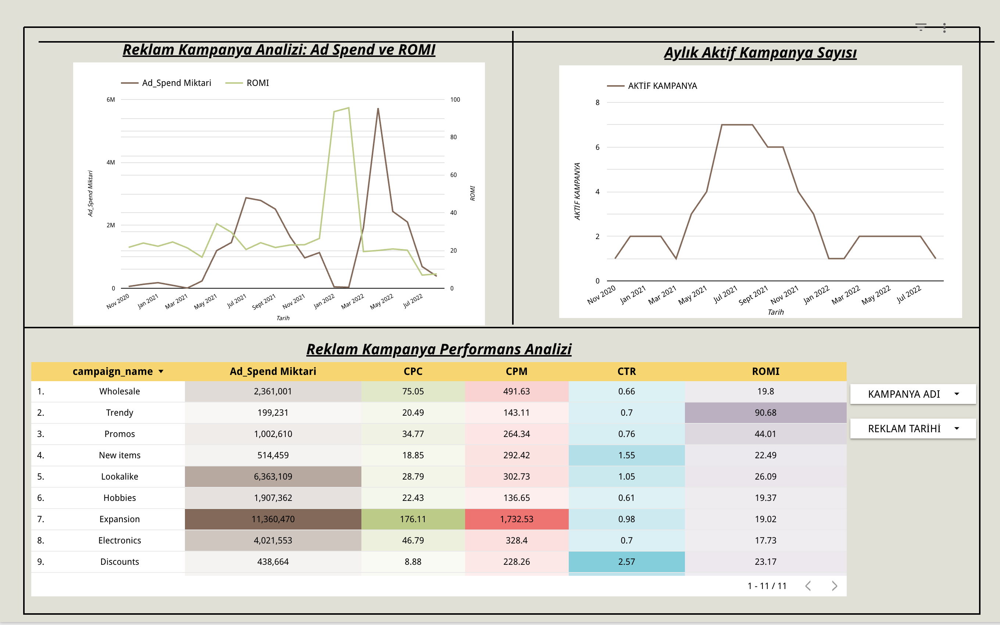
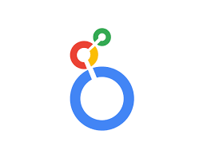

5. Proje – Reklam Kampanya Performans Analizi (Looker Studio)

Açıklama
Bu analiz, farklı reklam kampanyalarının performansını hem görsel hem de metrik bazlı olarak izlemek için tasarlandı. Looker Studio üzerinde kurulan bu dashboard sayesinde şirketler reklam yatırımlarının ne kadar geri dönüş sağladığını kolayca görebilir.
Bu analiz ne kazandırır?
- Daha fazla tıklama, gösterim ve dönüşüm sağlayan kampanyaları belirleyerek verimli stratejiler geliştirir.
- CPC, CPM, CTR gibi temel metrikleri karşılaştırmalı olarak sunar.
- Aylık aktif kampanya sayısını izleyerek mevsimsel planlama yapılmasını sağlar.
- ROMI hesaplaması ile her kampanyanın yatırım getirisini net ölçer.
- Reklam bütçesinin en iyi şekilde kullanılmasına yardımcı olur.
Sonuç: Veriyle yönetilen reklam bütçeleri, performansta kesinlik ve kârlılık sağlar.
Öneriler
- ROMI değeri düşük kampanyalar kapatılmalı veya yeniden hedeflenerek optimize edilmeli.
- CTR yüksek ama dönüşüm sağlamayan kampanyalarda landing page gözden geçirilmeli.
- Aktif kampanya sayısının düştüğü dönemlerde özel içerik ve fırsat kampanyaları planlanmalı.
- CPM yüksek kampanyalarda daha niş hedef kitleler denenmeli; maliyetin nedeni analiz edilmeli.
- ROMI yüksek kampanyalar benzer format ve kitlelerle tekrarlanmalı.
- Bütçeler geçmiş performansa göre kanal bazlı dağıtılarak verimli planlanmalı.
Teknik Analiz
Kullanılan Araçlar: Looker Studio (Google Data Studio) — Facebook Ads & Google Ads veri aktarımı
Veri Yapısı: campaign_name, ad_platform, ad_spend, impressions, clicks, conversions, revenue, romi, ctr, cpc, cpm
Dashboard Bileşenleri:
- Toplam Harcama vs Gelir (Line Chart) – Aylık harcama & gelir yan yana
- ROMI Zaman Serisi – (Revenue − Ad Spend) / Ad Spend
- Kampanya Bazlı Performans – Tablo + çubuk grafik ile CPC, CPM, CTR, ROMI sıralaması
- Aktif Kampanya Sayısı – Aylık yoğunluk analizi
- Platform Karşılaştırması – Facebook vs Google ROMI & CTR karşılaştırması
Etkileşimli Özellikler: Tarih, platform, kampanya filtreleri; canlı veri güncellemesi; tool-tip & koşullu biçimlendirme.
Kullanılan Araç Rozeti:
Looker Studio
